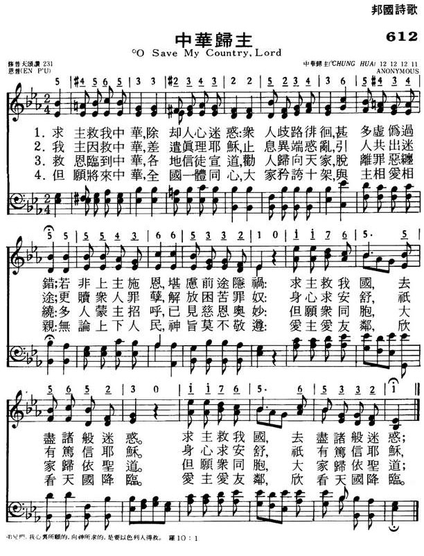

|
|
|
|
|
612中华归主
1.求主就我中华,除却忍心迷惑:
众人歧路徘徊,甚多虚伪过错; 若非上主施恩,堪虑前途隐祸; 求主救我国,去尽诸般迷惑. 求主救我国,去尽诸般迷惑. 2.我主因救中华,差遣真理耶稣, 止息异端惑乱,引人共出迷途; 更赎众人罪孽,解放困苦罪奴; 身心求安舒,祗有笃信耶稣. 身心求安舒,祗有笃信耶稣. 3.救恩临到中华,各地信徒宣道, 劝人归向天家,脱离罪恶缠绕: 多人蒙主招呼,已见慈恩奥妙: 但愿众同胞,大家归依圣道. 但愿众同胞,大家归依圣道. 4.但愿将来中华,全国一体同心, 大家矜夸十架,与主相爱相亲: 无论上下人民,神旨莫不敬遵. 爱主爱邻友,欣看天国降临. 爱主爱邻友,欣看天国降临. |
|
https://www.mred365.cn/szxg/7615.html

|
|
|
|
|

北京 神 学院 伦敦
会 的学 生恩普
差 派 传 教 士 的 宗派 在 中 国渐 渐 有 了 立 足 之 地后, 便 广设 出版社, 又 出版多
方 言圣 诗, 其 中有不 少以 北 平话 (普通 话 )为主 的圣 诗。
歌 词大 量引 用儒释道 的用语, 曲调 也用 一些 地方 民间音 乐, 以 求圣诗 的本 色化, 但音 乐仍 主要是西 方作品。
这 个时期最 主要 的代表作 品是《华北公 理会 的颂主 诗 歌 》(18 72 年 出 版 )。 这 本 诗 集 是 由 柏 汗 理(H.Blod
ge t)、 富善 (Go od‘eh )二 人 合 作 编 印一 本 官话 (北 京 话 )的《颂 主诗
集 》,
1 8 7 2 年 在北 京 出版。 柏汉理 毕 业 于美 国 雅礼 大 学,1860 年 到天 津, 是
最 早到 该地 的新教 传教 士。
1 8 64 年 到北京, 为译官 话《新约 圣经》五人之 一 (和合 本圣 经 ), 同 时也 翻译圣 诗。
富 善于 1 8 6 5 年 到 中国, 擅 长音 乐, 据 说 未学 会说 中国话 之先, 即已 教会北 京教会 信徒 唱歌。 他们 二人所编 的圣诗 全
书共 有圣 诗 3 巧 首, 三 一颂 19 首, 及崇拜 乐章 12 首, 此外 并 附有《晨祷文》一 栏。
1 8 95 年增至 4 0 8 首, 在 北京 出版,19 0 年再 版。 全 书出版后, 就遇 到义和
团事件, 以致 全部新 书和铅 版都被 烧毁。 后于 1 90 7 年在 日本 横滨 出版, 可 能 五线 谱 用 石 印, 文字用 铅 印, 计有 五种 不
同的版 本。
19 25 年 又 在上 海美华 书馆重 印,1 9 33 年 又 在 天津工业 印字馆 重印。
, 末后有三一 颂 12 式。 集 内也 有 几 十首 创作 的 诗歌,有 通 州的 张牧师、 高文林、 教
员张 洗心、天 津 的教 士 张逢 源和北京 神 学院 伦敦 会
的学 生恩普 等 几人, 但他 们 的作品有 几首很 有永久 的价值, 至 今仍在 传唱, 如 张牧
师的《与 主心 交歌》(旧 版普 颂 3 1 首、新编 19 首 )、
恩普 的《中华 归 主歌 》(旧 版普 颂 2 31 首 )。 还有 为布道 之用 的《传 播救 恩歌)( 旧 版普颂 2 23 首 )是诚静怡博 士译著
的作品。
这本诗 集 出版 后不胫 而走, 流行 之广, 没有其他任何 圣诗集 可 以 与之相 比, 不 单华北 地 区、 既使 是华中、华
东与华 西 各地 教会 也相 继 采用, 直到 1 9 36 年《普颂 》出版后, 才取 它的地位 而代之。 所以 在《普 颂》以前 它是一 本在 中国流行最
广的圣诗 集 【6 1
中華歸主神學院[編輯]
中華歸主趙君影神學院（簡稱中華歸主神學院）是一所坐落於美國加利福尼亞州阿罕布拉的學院。創辦者為趙君影博士。可推溯至1956年的基督教中華歸主協會。1984年，於加州洛杉磯柔似蜜選定當時的校舍。1985年3月4日正式開學。是全球華人神學院中第一間獲准頒發哲學博士學位的神學院。1996年，神學院遷至現今院址，秋季班在新址上課。其也為福音訓練協會(ETA)之會員之一。 [1]
起源[編輯]
趙君影（1906年─1996年）牧師幼年時期母親即逝世，父親將其送至教會學校讀書。三十多歲時因肺病復發，病床上研讀托爾斯泰的有神論。確立自己神學的基礎。江蘇江陰教會學校教英文時，教其學生信主，對自己是要信教還是傳道產生懷疑。1933年，聽了一場由張性初女士舉辦七天，演講聖潔生活的培靈會後，猶豫許久將自己認罪的信寄出，而其後也成為後來的趙師母。1944與內地會的艾得理合作，在大後方重慶沙坪垻中央大學舉行佈道，共三天三夜。兩千多人決志歸主。1956年遷美後，成立「基督教中華歸主協會」，晚年在洛杉磯辦學中華歸主神學院。而後遷址至現址。
參考文獻[編輯]
延伸閱讀[編輯]
- 趙君影，《漫談五十年來中國的教會與政治》，中華歸主協會出版，1981
- 趙君影，《我的宗教經驗》，中華歸主協會出版，1982
- 於力工，〈趙君影與抗戰期間的基督徒學生運動〉，《傳》，1996，7/8月號
- 查大衛，〈紀念我的恩人趙君影牧師〉，《傳》，1996，7/8月號
外部連結[編輯]